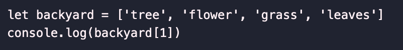
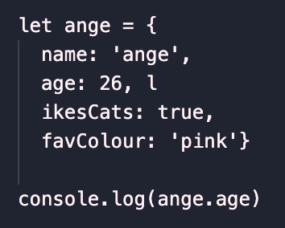

JavaScipt and DOM
Analogy of HTML and CSS

So HTML is like a recepie book of instructions that tells a website and a webpage how what to look like. It is the instructions to the skeleton of the website but to make specific details/design, we need the ingrediants. CSS is like the ingrediants, depending on what ingrediants we add in while we are cooking, following the instructions, will depend on the outcome.
Control Flow and Loops

So control flow and loops like processes. For example, if I really wanted to get a specifc type of chocolate from the supermarket I would first, get in the car, turn on the car and drive to the supermarket. This is the flow. Once I am at the supermarket I will try and find the spcecific chocolate I want. Let's pretend I have all the time in the world and I want to pick each one up and examine it. I will look through each of the chocolate available on the shielf until they I have found the one I want. The process of me looking for the specific chocolate at the supermarket and picking them up to examine each of them is considered the loop.
What Is DOM and How Do We Use It?
The DOM is the document object model. It pretty much has everything in it and it contains the structure styles and the content. So what we have learned so far using HTML, CSS and JavaScript are all part of the DOM. We can change elemenet in all of these scripts and languages to change how we want our webpage to look like. We can do this using programmes such as Visual Studios or we can do it directly on web development tools such as Chrome Developer tools.
Arrays vs Objects
Arrays are made up of elemenets within square brackets [], they are sort of like a list of informtion. Whereas objects, are like a book and they can have lot of information within the object.
To access data in an array we would have to know the location of the of the data within the array. E.g. array let backyard = ['tree', 'flower', 'grass', 'leaves'], if we wanted to access flower, we would need to use the location. So in our case we would go: console.log(backyard [1]). Arrays start from 0 and continue to go up each step.
To access data in an object, we need to call on the particular name of the object and then the data that is associated with it. E.g. ange = {name: 'ange', age: 26, likesCats: true, favColour: 'pink'}, if we wanted to know my favourite colour we would have to go: concole.log(ange.age)
What Are Functions?
Functions helps us do things within JavaScipt is sort of like rules that tells us how to do a task or calculate values. Functions are helpful because they help us do things. It takes some sort of input somwhere and give an output somewhere. We need to give all the information into the function for it to work but we also need to call on the function to give an output. Functions can be useful when we want to block out a chunk of code and use it to execute certain things throughout the rest of the code.